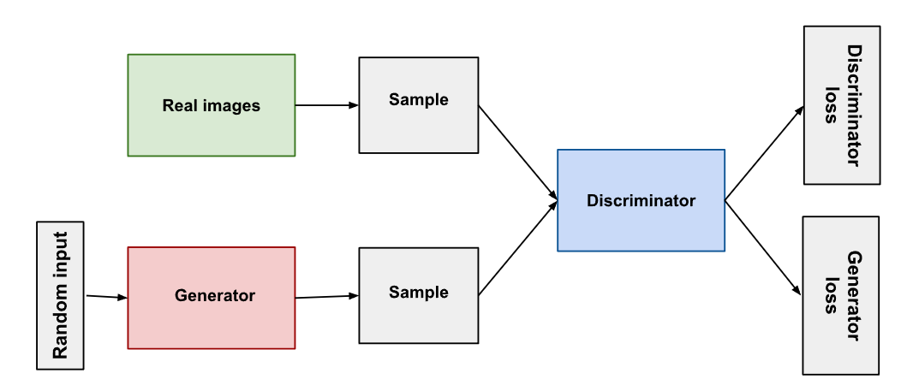
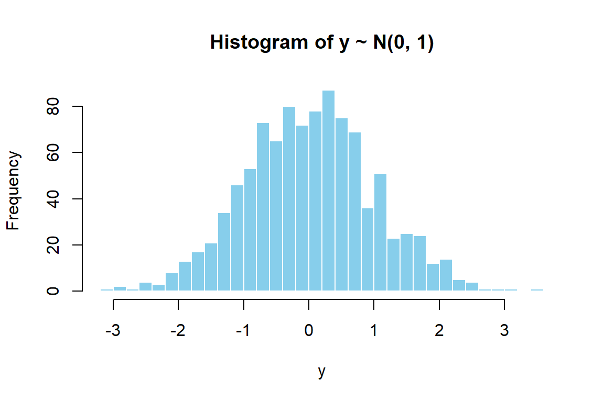
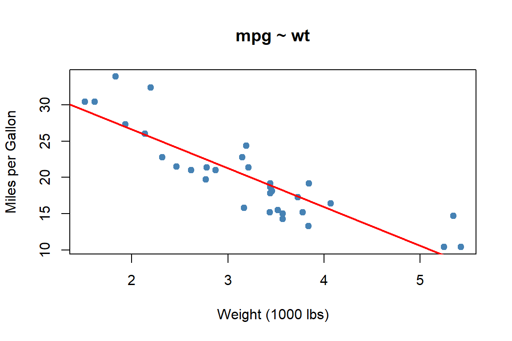
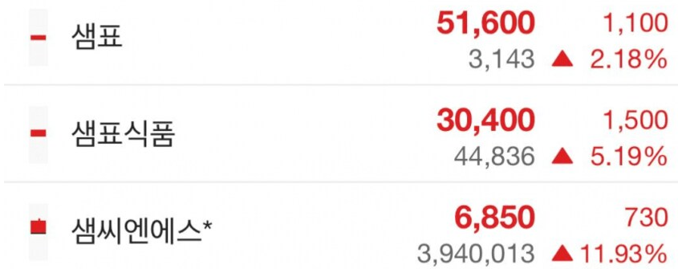
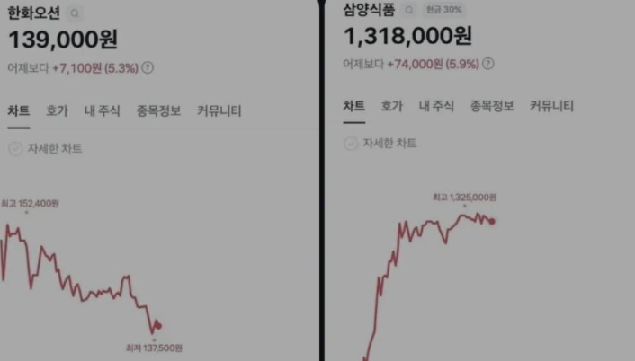

Chapter 1 서론
서론에서는 R을 활용한 데이터 분석 방법론 강의에서 다룰 주제를 간략하게 설명하고자 합니다.
1.1 데이터, 인간, 그리고 인공지능
1.1.1 인간의 학습
인간은 태어날 때부터 데이터를 수집하고 결합하여 분석하는 과정을 쉼 없이 수행합니다. 우리가 가진 시각, 청각, 촉각 등 모든 감각 기관을 통해 수집된 정보는 뇌에 저장되고 처리되며, 이를 바탕으로 인간은 상황을 예측하고 판단하며 행동합니다.
데이터 수집과 예측의 과정
- 데이터 수집: 신생아는 부모의 얼굴을 반복적으로 관찰하고, 뜨거운 물건을 직접 만져보며 세상의 물리법칙을 몸으로 배웁니다. ‘달다’, ‘시끄럽다’, ’춥다’와 같은 감각 모두가 뇌에 쌓이는 훌륭한 데이터입니다.
- 예측의 수행: 뇌에 충분한 데이터가 쌓이면 우리는 예측을 하기 시작합니다. ‘냄비에 물이 끓고 있으니 저걸 만지면 뜨거울 거야’, 혹은 ’음식의 색이 빨가니까 분명히 매울 거야’라고 판단하는 것이죠.
- 예측의 실패와 모델 업데이트: 물론 우리의 예측이 항상 맞는 것은 아닙니다. 마라탕을 처음 먹어봤을 때 우리가 알던 매운맛과 달라 당황했던 기억이나, 보라색 가지 요리의 식감이 예상과 달라 놀랐던 경험이 있을 것입니다. 인간은 이러한 ’예측 실패(오차)’를 경험하면, 뇌 안의 정보를 수정하고 다음에는 더 정확한 예측을 하도록 스스로를 발전시킵니다.
1.1.2 기계학습과 인공지능의 탄생
이러한 인간의 학습 능력을 컴퓨터로 구현하려는 학문이 바로 기계학습(Machine Learning) 과 인공지능(Artificial Intelligence) 입니다.
과거의 컴퓨터 프로그램은 사람이 직접 모든 규칙과 논리를 정의해 주어야만 움직였습니다. 하지만 기계학습은 컴퓨터에게 규칙을 알려주는 대신 방대한 데이터를 주어 스스로 법칙을 학습하게 만듭니다.
사례1: 테슬라(Tesla)의 자율주행
- 과거에는 자율주행을 위해 차선 인식, 앞차와의 거리 계산 등 수많은 규칙이 담긴 코드가 필요했습니다.
- 하지만 테슬라는 기존에 작성되었던 30만 줄짜리 규칙 기반 코드를 과감히 삭제하고, 전 세계 도로에서 수집된 방대한 ’도로 주행 영상 데이터’를 인공지능 모델에 직접 학습시키는 방식을 도입하여 놀라운 자율주행 성능을 구현해 냈습니다.
사례2: 적대적 생성 신경망 (Generative Adversarial Networks, GAN)
인공지능이 단순히 무언가를 ’인식’하거나 ’예측’하는 것을 넘어, 세상에 없던 새로운 데이터를 스스로 ’창작’해내는 놀라운 기술이 있습니다. 바로 적대적 생성 신경망(GAN) 입니다. 이 기술의 학습 과정은 마치 ’위조지폐범’과 ’경찰’의 쫓고 쫓기는 게임과 같습니다.
- 생성자(Generator, \(G\)): 진짜와 구별할 수 없는 완벽한 가짜 데이터를 만들어 판별자를 속이는 것이 목표입니다.
- 판별자(Discriminator, \(D\)): 들어온 데이터가 진짜인지, 아니면 생성자가 만들어낸 가짜인지 정확하게 구별해 내는 것이 목표입니다.
처음에는 생성자(\(G\))의 솜씨가 형편없어 판별자(\(D\))가 쉽게 가짜를 찾아냅니다. 하지만 경찰에게 계속 들키면서 생성자는 점차 무엇이 잘못되었는지 깨닫고 점점 더 정교한 가짜를 만드는 법을 학습합니다. 판별자 역시 더 교묘해진 가짜를 찾아내기 위해 감식 능력을 키웁니다.
이 둘이 끝없이 경쟁(Adversarial) 하다 보면, 결국 생성자는 진짜 데이터와 구별할 수 없을 만큼 완벽한 가짜 데이터를 ‘생성(Generative)’ 해내게 됩니다.

Figure 1.1: GAN의 학습 구조 (출처: https://velog.io/@sjinu/GAN-DCGAN)
1.1.3 모든 것의 기반: 데이터
우리가 보고, 듣고, 느낀 것이 뇌에 어떻게 저장되는지는 아직 명확히 알지 못합니다. 하지만 우리는 다양한 자료를 컴퓨터에 저장하는 방법을 개발하였고, 이를 일반적으로 데이터(Data) 라고 부릅니다.
오늘날 우리가 다루는 데이터는 디지털화된 자료로서, 기본적으로 0과 1이라는 비트(Bit) 의 조합으로 표현됩니다. 과거에는 저장 공간의 한계로 많은 데이터를 다룰 수 없었지만, 비약적인 IT 기술의 발전은 단순한 0과 1의 조합만으로도 상상할 수 없을 만큼 방대한 양의 데이터를 손쉽고 효율적으로 저장하고 처리할 수 있게 해 주었습니다.
그러나 인간이 하는 일을 기계가 온전히 수행할 수 있도록 만들기까지는 여전히 많은 과제가 남아 있으며, 그 첫걸음은 데이터를 컴퓨터가 이해할 수 있도록 잘 다루는 것입니다.
이 과목에서는 컴퓨터를 이용하여 현실 세계의 정보를 디지털화하여 저장하고, 이를 변형·결합하여 분석에 활용할 수 있는 유용한 형태로 만드는 프로그래밍의 기초를 배우게 됩니다. 여러분은 이 강의를 통해 인공지능과 빅데이터 시대의 가장 강력한 무기인 ‘데이터를 다루는 힘’ 을 기르게 될 것입니다.
1.2 프로그래밍 언어
1.2.1 언어(language)는 소통입니다
사람은 언어를 통해 자신의 의사를 표현하고 타인의 생각을 이해하며 서로 소통합니다. 언어를 이용해 상대방에게 원하는 일을 요청할 수도 있고, 자신의 생각이나 수행한 일을 다른 사람에게 설명할 수도 있습니다.
인간과 인간을 이어주는 언어는 수천 가지(예: 한국어, 영어, 일본어 등)가 존재하며, 모든 언어에는 그것을 표현하는 문자 와 문자를 배열하는 규칙인 문법 이 존재합니다. 예를 들어, 우리가 영어를 쓰는 사람과 소통하기 위해서는 영어 단어를 익히고 문법을 학습하여 의사를 전달해야 하는 것과 같습니다.
1.2.2 컴퓨터와 대화하는 방법, 프로그래밍 언어
이와 마찬가지로, 프로그래밍 언어(Programming Language) 는 인간과 컴퓨터가 서로 소통하기 위해 만들어진 언어입니다.
프로그래밍 언어 역시 인간의 언어처럼 고유의 ’단어’가 있으며, 이를 올바르게 조합하는 ’문법’이 존재합니다. 인간의 대화에서 단어 선택이 잘못되거나 문법이 틀리면 의사소통에 오해가 생기는 것처럼, 컴퓨터와의 소통에서도 프로그래밍 언어의 단어와 문법을 정확히 지켜야만 오류 없이 우리가 원하는 결과를 얻을 수 있습니다.
수많은 언어 중, 왜 ’R’일까?
프로그래밍 언어도 인간의 언어처럼 단 하나만 존재하는 것이 아닙니다. 초기의 Fortran을 시작으로 C, Java, Python 등 수많은 언어가 목적에 맞게 개발되어 왔습니다. 이렇게 다양한 언어 중에서 어떤 것을 배울지 선택하는 것은 중요한 문제입니다. 언어는 사람들이 많이 사용할수록 유용한 도구가 되기 때문입니다.
이 과목에서 우리가 배울 R 은 1993년 뉴질랜드 오클랜드 대학의 통계학자 Ross Ihaka와 Robert Gentleman에 의해 개발된, 통계 계산과 데이터 분석에 특화된 프로그래밍 언어입니다. 이름의 ’R’은 두 개발자의 이름 첫 글자에서 따온 것이며, 벨 연구소에서 개발된 통계 언어 S의 오픈소스 구현체로 출발했습니다.
R은 다음과 같은 강력한 특징을 가지고 있습니다.
- 통계 분석에 특화: 회귀분석, 가설검정, 시계열, 베이즈 추론 등 거의 모든 통계 기법이 표준 함수 또는 패키지 형태로 제공됩니다.
- 풍부한 시각화:
ggplot2를 비롯한 시각화 패키지를 통해 출판물 수준의 그래프를 손쉽게 그릴 수 있습니다. - 방대한 패키지 생태계: CRAN(Comprehensive R Archive Network)에는 2만 개가 넘는 패키지가 등록되어 있어, 통계학·생물정보학·계량경제학·머신러닝 등 다양한 분야에서 활용됩니다.
- 재현 가능한 연구(Reproducible Research): R Markdown, Quarto와 같은 도구를 통해 분석·코드·결과·문서를 하나의 파일에 담아 관리할 수 있습니다 — 이 강의자료 역시 R Markdown으로 작성되었습니다.
간단한 R 코드 예시를 살펴봅시다.
## [1] 50.5## [1] 29.01149## Min. 1st Qu. Median Mean 3rd Qu. Max.
## -3.04804 -0.67756 0.01472 0.01377 0.62262 3.41648hist(y,
breaks = 30,
col = "skyblue",
border = "white",
main = "Histogram of y ~ N(0, 1)",
xlab = "y")
Figure 1.2: 표준정규분포에서 추출한 1000개 표본의 히스토그램
1.2.3 언어 학습의 핵심
마지막으로 흥미로운 사실이 하나 있습니다. 우리가 외국어를 열심히 배운 뒤 오랫동안 쓰지 않으면 단어와 문법을 잊어버리고 서툴러지는 것처럼, 프로그래밍 언어 역시 사용하지 않으면 금세 코딩 능력이 약해진다는 점입니다.
여러분은 이제 이 과목을 통해 통계 분석 분야에서 가장 널리 쓰이는 언어 중 하나인 R을 배우고, 데이터를 다루는 강력한 기술을 익히게 될 것입니다. 하지만 진정한 실력은 강의를 듣는 것에서 끝나지 않고, 배운 ’언어’를 컴퓨터와 지속적으로 소통하며 써먹을 때 완성된다는 사실을 꼭 기억하시기 바랍니다.
1.3 통계학
1.3.1 분석과 예측: 우리는 왜 데이터를 분석할까?
이제 데이터를 이용하는 목적에 대해 생각해 봅시다. 데이터를 ‘분석’ 한다고 흔히 말하는데, 그렇다면 분석은 왜 필요하며 어떤 의미일까요? 분석의 개념을 엄밀하게 정의하기는 쉽지 않지만, ‘왜’ 분석하는지를 고민해 보면 이해가 한결 쉬워집니다.
많은 분야에서 데이터를 분석하는 가장 궁극적인 목적은 바로 예측(Prediction) 입니다. 예를 들어, 기상청에서는 매일 방대한 기상 자료를 수집하고 분석합니다. 그 이유는 명확합니다. 내일의 날씨, 즉 미래를 예측하기 위함입니다. 이 과목에서 여러분은 예측을 수행하기 위한 분석의 기초를 배우게 됩니다. 통계학에서 분석이란, 우리가 예측하려는 대상(종속변수, \(y\))과 그에 영향을 미치는 요인들(독립변수, \(x\)) 사이의 관계를 모형(Model) 으로 표현하는 작업입니다. 이를 가장 단순한 수학적 기호로 나타내면 다음과 같습니다.
\[ y \approx f(x) \]
- 비교적 쉬운 예측: 주차장의 차량번호 인식 장치는 카메라로 찍힌 이미지를 디지털 데이터로 변환하고 번호를 예측합니다. 변수가 적고 환경이 통제되어 있어 매우 높은 정확도를 보입니다.
- 매우 어려운 예측: “내일 비가 몇 시에 어디에 얼마나 내릴지” 예측하는 것은 수많은 환경 변수(\(x\))가 작용하기 때문에 훨씬 더 어렵습니다. 그럼에도 기상청이 슈퍼컴퓨터로 방대한 자료를 분석하여 예측의 정확도를 꾸준히 높여가고 있습니다.
R에서는 가장 단순한 예측 모형인 선형회귀(linear regression) 를 단 한 줄의 명령으로 적합할 수 있습니다.
##
## Call:
## lm(formula = mpg ~ wt, data = mtcars)
##
## Residuals:
## Min 1Q Median 3Q Max
## -4.5432 -2.3647 -0.1252 1.4096 6.8727
##
## Coefficients:
## Estimate Std. Error t value Pr(>|t|)
## (Intercept) 37.2851 1.8776 19.858 < 2e-16 ***
## wt -5.3445 0.5591 -9.559 1.29e-10 ***
## ---
## Signif. codes: 0 '***' 0.001 '**' 0.01 '*' 0.05 '.' 0.1 ' ' 1
##
## Residual standard error: 3.046 on 30 degrees of freedom
## Multiple R-squared: 0.7528, Adjusted R-squared: 0.7446
## F-statistic: 91.38 on 1 and 30 DF, p-value: 1.294e-10plot(mtcars$wt, mtcars$mpg,
pch = 19, col = "steelblue",
xlab = "Weight (1000 lbs)",
ylab = "Miles per Gallon",
main = "mpg ~ wt")
abline(fit, col = "red", lwd = 2)
Figure 1.3: 단순선형회귀 적합 결과
주가를 완벽하게 예측하는 방정식이 존재할까?
만약 우리가 주식 가격을 예측하는 완벽한 통계 모형을 만들고자 한다면, 아마도 아래와 같은 방정식을 세울 수 있을 것입니다.
\[ \text{주식가격} = \text{달러환율} \times \beta_0 + \text{국제정세} \times \beta_1 + \text{금리} \times \beta_2 + \dots + \epsilon \]
여기서 \(\beta\)는 각 요인이 주가에 미치는 영향력을 의미합니다. 하지만 현실에서 주가를 정확히 예측하는 것은 사실상 불가능에 가깝습니다. 환율이나 금리 같은 보조 변수(\(x\)) 자체도 끊임없이 변동하여 예측해야 할 대상이 되며, 무엇보다 방정식 끝에 있는 \(\epsilon\)(오차항) 때문입니다. \(\epsilon\)은 우리의 논리나 데이터로는 도저히 설명할 수 없는 ‘예측 불가능한 불확실성’ 을 의미합니다.
현실 세계의 주식 시장에서는 논리적 예측을 빗나가는 황당하고 불확실한 사건(\(\epsilon\))들이 무수히 발생합니다.


Figure 1.4: 주가의 비이성적 변동 사례
이처럼 인간의 비이성적 심리나 우연한 사건들은 데이터를 통한 예측을 극도로 어렵게 만듭니다. 따라서 이 과목에서는 통계학을 기반으로 합리적인 예측 모형을 만드는 방법뿐만 아니라, 이러한 예측의 불확실성을 수학적으로 다루고 통제하는 방법 도 함께 학습하게 될 것입니다.
1.3.2 빅데이터와 데이터 과학
오늘날 우리는 과거와는 비교할 수 없을 정도로 방대한 양의 자료가 쏟아지는 시대에 살고 있습니다. 과거에는 불과 1.44MB 용량의 얇은 ‘플로피 디스크’ 한 장에 귀중한 데이터를 담아 다녔지만, 이제는 매일 수십억 GB 단위의 빅데이터(Big Data) 가 생성되고 있습니다.
이렇게 너무 거대해서 기존의 저장 공간에 담거나 한 번에 처리할 수 없는 데이터를 어떻게 효율적으로 저장하고 처리할 것인가는 아마존, 네이버 등 글로벌 IT 기업 기술자들의 핵심 연구 과제입니다.
하지만 이 과목에서 우리는 빅데이터를 저장 기술의 관점이 아닌 데이터 과학자(Data Scientist) 의 관점에서 바라볼 것입니다.
데이터 과학을 수행하기 위해서는 크게 세 가지 역량이 요구됩니다.
- 통계학(Statistics): 데이터를 분석하고 모형을 세우는 수학적 기반
- 프로그래밍(Programming): 데이터를 실제로 다루고 처리하는 기술력 (이 과목에서는 R을 사용)
- 도메인 지식(Domain Knowledge): 분석하려는 분야(예: 금융, 의료, 마케팅)에 대한 깊은 이해
데이터 과학자에게 빅데이터란 그저 “아주 거대한 마법”이 아니라, 작은 데이터와 마찬가지로 예측을 돕는 하나의 도구 일 뿐입니다. 데이터를 이해하기 위해 우리는 데이터의 두 가지 태생적 특성을 구분할 필요가 있습니다.
모으는 데이터: 명확한 목적을 가지고 체계적인 표본 추출과 조사 방법론을 통해 수집된 자료입니다. (예: 통계 조사, 여론 조사)
- 장점: 실험 설계가 잘 되어 있어 신뢰도가 매우 높고, 정교한 분석이 가능합니다.
- 단점: 비용이 많이 들고, 사전에 계획된 관심 대상 외의 정보는 알 수 없습니다.
모이는 데이터: 특정한 분석 목적 없이 사람들의 일상 속에서 자연스럽게 축적된 거대한 흔적입니다. (예: 구글 검색 기록, 네이버 지식iN 글, SNS 포스팅 등)
- 장점: 매우 빠르고 신속하게 수집되며, 엄청난 규모를 자랑하여 다양한 목적에 유연하게 활용할 수 있습니다.
- 단점: 정제되지 않은 노이즈(가짜 정보 등)가 많아 표본을 그대로 신뢰하기 어렵습니다.
결론적으로, 이 과목에서 여러분이 배우게 될 R 프로그래밍을 통한 데이터 처리 기술과 통계 모형을 활용한 예측 방법론은, 거대한 빅데이터든 정교하게 수집된 작은 데이터든 상관없이 우리가 앞으로 살아가는 데 있어 필수적인 ‘데이터를 다루는 기초 체력’ 이 되어줄 것입니다.